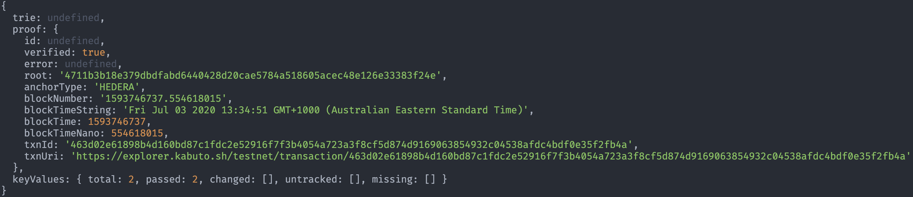

Introduction

Proofable is a general purpose proving framework for certifying digital assets to public blockchains. Overall, it consists:
-
CLI (
proofable-cli): the command-line interface (CLI) for API Service (proofable-api). At the moment, it supports proving a file-system to a blockchain -
API Service (
proofable-api): the general purpose proving service that is fast and effective. It provides a set of APIs to manipulate trie structures and generate blockchain proofs for any digital asset. A trie is a dictionary of ordered key-values that can be built incrementally, whose root hash at any given time can be derived efficiently. Once the root hash is proven to a blockchain, every key-value is proven, so as the digital asset stored in that key-value -
Anchor Service (
provendb-anchor): the service continuously anchors hashes to blockchains, which is similar to what Chainpoint does, but with much better performance and flexibility. It supports multiple anchor types and proof formats. Digital signing can be also done at the Merkle root level. It is consumed byproofable-api, which is not directly public-accessible at the moment
Links:
Concepts
Before diving into code, let's go through these high-level concepts that Proofable is built upon
Trie
A trie is a data structure that behaves like a dictionary of key-values. Any data can be encoded as binaries in a key-value pair. The trie takes care of hashing the data and deriving the Merkle root. Internally, the key-values of a trie are ordered lexicographically by their keys, which form a prefix tree, as follows:

No matter what order the key-values are put in, the same bag of key-values will always result in the same trie with the same Merkle root. This determinism is known as commutative and associative of data hashing, which allows a trie to be built incrementally with efficiency. The inserts, lookups, updates, and deletes of key-values in a trie are all in O(log(n)). Thus, a new trie can be easily derived by modifying an existing trie. In storage-wise, each trie node is stored in a key-value store with the node's hash as the key and node's data as the value. This makes the trie storage agnostic and flexible enough to support all-sorts of key-value stores, such as embedded databases like LevelDB or blob storages like S3. This also makes modifying an existing trie memory and computation efficient, because only the modified trie nodes need to be loaded from the persistent store, and new nodes need to be saved back.
In Proofable, we extended the trie to be an all-in-one solution package - Proofable certificate. When a trie is updated, a new trie root will be created, but previous trie node data are still there and immutable. The series of trie roots resembles the history of the trie data change. A trie proof (anchoring trie path of the certificate) can be created for each root, which means the hash of the root will be anchored to a blockchain of the user's choice permanently. Once the anchoring is confirmed, all the data contained in the trie at the given root will be mathmatically/cryptographically authenticated, i.e. it will be able to claim that the trie data exist exactly like this at the time of the confirmation. A key-values proof (sub-certificate) can be also extracted from a trie to independently prove a subset of the key-values the user is interested in, e.g. claiming that two key-values of particular interest exist exactly like this at the time of the confirmation. When all manipulations are done, the trie can be exported by the user and put in a safe place they have full control. Later on, the trie can be imported back to do further manipulations.
Using the trie as the basis for Proofable and ProvenDB has the following advantages over more simplistic approaches:
- Very large amounts of data can be anchored to a blockchain in a single transaction. Only the root of a trie needs to be included in the blockchain transaction. The trie structure itself forms the link between that transaction and the individual elements being proved.
- The trie supports hierarchies of proof – we can generate proofs for a specific directory for instance, as well as proofs for all the items in the directory.
- The trie can be built incrementally, reducing the burden of recalculating an entire proof when new elements are added.
Chain of Trust
When a piece of information (data) is anchored to a blockchain by Proofable using a Merkle trie, we can work backward using the corresponding Merkle trie path to assert that the data has existed from the time of the blockchain transaction. The Merkle trie path itself becomes a certificate for the data. We can generate such a certificate to prove that the data has existed from a timestamp. If the data is an image, then we can use the certificate to verify an arbitrary image and see whether someone has tampered with it. We can also use the timestamp to verify the certificate itself, such that when we trust the timestamp, we can check the validity of the certificate and then the image. In this way, the surface area for potential forgery attack is reduced to a block. Or if we remembered and trusted the transaction hash of the certificate, the attack surface is reduced to that transaction. The timestamp and transaction hash are the seed information like the first principles in philosophy which we can base our trust on. In this way, a chain of trust is formed from the blockchain seeds to our image contents as in above figure. For more details, please check out our Medium post Build Trust into Image with Blockchain
Anchor Types
An anchor type is a type of blockchain that is supported by Proofable to anchor your data. The following list represents the available anchor types in Proofable's production environment
| Name | Number | Available | Batch Size | Batch Time | Description |
|---|---|---|---|---|---|
| ETH | 0 | YES | 16384 | 30s | Ethereum Rinkeby Testnet |
| ETH_MAINNET | 3 | YES | 32768 | 10m | Ethereum Mainnet. Ethereum is the second-largest cryptocurrency |
| ETH_ELASTOS | 4 | Elastos, which employs a "main chain-sidechain architecture" | |||
| ETH_GOCHAIN | 9 | GoChain, which is scalable, low cost and energy efficient | |||
| BTC | 1 | YES | 32768 | 1m | Bitcoin Testnet |
| BTC_MAINNET | 5 | YES | 32768 | 3h | Bitcoin Mainnet. Bitcoin is the largest cryptocurrency |
| CHP | 2 | Chainpoint | |||
| HEDERA | 6 | YES | 3072 | 3s | Hedera Testnet |
| HEDERA_MAINNET | 7 | YES | 3072 | 3s | Hedera Mainnet. Hedera is a DAG based blockchain that provides much better TPS than tranditional blockchains |
| HYPERLEDGER | 8 | Hyperledger Fabric, which is a modular blockchain framework for private enterprises |
CLI
proofable-cli is the command-line interface (CLI) for Proofable API Service (proofable-api). At the moment, it supports certifying a file-system to blockchains
Demo
This demo shows how to use proofable-cli to prove a directory of source code
Installation
For macOS users
Install via Homebrew
brew tap southbanksoftware/proofablebrew install proofable-cli
Later on, you can upgrade to the latest version using: brew upgrade proofable-cli
Install directly
Copy and paste the following bash command in a macOS Terminal:
bash -c "$(eval "$(if [[ $(command -v curl) ]]; then echo "curl -fsSL"; else echo "wget -qO-"; fi) https://raw.githubusercontent.com/SouthbankSoftware/proofable/master/cmd/proofable-cli/install.sh")"
Then hit return to run, which will install the latest proofable-cli binary into /usr/local/bin. Then you can use the CLI as:
proofable-cli -h
If you want to install the latest dev (cutting edge) binary, using:
ENV=dev bash -c "$(eval "$(if [[ $(command -v curl) ]]; then echo "curl -fsSL"; else echo "wget -qO-"; fi) https://raw.githubusercontent.com/SouthbankSoftware/proofable/master/cmd/proofable-cli/install.sh")"
To upgrade, simply repeat the installation steps
For Linux users
Install via Homebrew
brew tap southbanksoftware/proofablebrew install proofable-cli
Later on, you can upgrade to the latest version using: brew upgrade proofable-cli
Install directly
Copy and paste the following bash command in a Linux shell prompt:
sudo bash -c "$(eval "$(if [[ $(command -v curl) ]]; then echo "curl -fsSL"; else echo "wget -qO-"; fi) https://raw.githubusercontent.com/SouthbankSoftware/proofable/master/cmd/proofable-cli/install.sh")"
Then hit return to run, which will install the latest proofable-cli binary into /usr/local/bin. Then you can use the CLI as:
proofable-cli -h
If you want to install the latest dev (cutting edge) binary, using:
sudo ENV=dev bash -c "$(eval "$(if [[ $(command -v curl) ]]; then echo "curl -fsSL"; else echo "wget -qO-"; fi) https://raw.githubusercontent.com/SouthbankSoftware/proofable/master/cmd/proofable-cli/install.sh")"
To upgrade, simply repeat the installation steps
For Windows users
Install directly
Copy and paste the following PowerShell command in a PowerShell prompt:
& ([ScriptBlock]::Create((New-Object Net.WebClient).DownloadString('https://raw.githubusercontent.com/SouthbankSoftware/proofable/master/cmd/proofable-cli/install.ps1')))
Then hit return to run, which will install the latest proofable-cli.exe binary into your current directory. Then you can use the CLI as:
.\proofable-cli.exe -h
If you want to install the latest dev (cutting edge) binary, using:
& ([ScriptBlock]::Create((New-Object Net.WebClient).DownloadString('https://raw.githubusercontent.com/SouthbankSoftware/proofable/master/cmd/proofable-cli/install.ps1'))) "dev"
To upgrade, simply repeat the installation steps
Install directly in Windows Subsystem for Linux (WSL)
Follow the same steps for Linux users
Build your own binary
- make sure the latest golang is installed
- clone this repo
cd cmd/proofable-cli && make
Dev (cutting-edge) binaries
Prd (released) binaries
Usage
# for help
./proofable-cli -h
# authenticate with ProvenDB. You don't have to explicitly run this. When you execute a command that requires authentication, it will be automatically run
./proofable-cli auth
# remove existing authentication
./proofable-cli auth -d
# create a proof for a path
./proofable-cli create proof path/to/the/data
# create a proof for a path in a custom location
./proofable-cli create proof path/to/the/data -p path/to/output/the/proof.pxproof
# create a proof for a path including metadata
./proofable-cli create proof path/to/the/data --include-metadata
# verify a proof for a path
./proofable-cli verify proof path/to/the/data
# verify a proof for a path and output the proof's Graphviz Dot Graph
./proofable-cli verify proof path/to/the/data -d path/to/output/the/dot/graph.dot
# verify a proof for a path from a custom location
./proofable-cli verify proof path/to/the/data -p path/to/the/proof.pxproof
# create a subproof out of a proof
./proofable-cli create subproof key1_of_the_proof key2_of_the_proof -p path/to/the/proof.pxproof -s path/to/output/the/subproof.pxsubproof
# verify a subproof for a path
./proofable-cli verify subproof path/to/the/data -s path/to/the/subproof.pxsubproof
# verify a subproof for a path and output the subproof's Graphviz Dot Graph
./proofable-cli verify subproof path/to/the/data -s path/to/the/subproof.pxsubproof -d path/to/output/the/dot/graph.dot
Go SDK
Proofable Go SDK is the software development kit to help users build solutions around proofable-api service using Golang. It includes helpers to perform authentication, consume the Proofable stream-based gRPC APIs, handle file input and output, hash and diff data and build command line interface
Getting started
To add the Proofable package to your Golang project, just run:
go get github.com/SouthbankSoftware/proofable
Now, let's go through a hello world example to:
-
create a Proofable API client
-
prove a bunch of key-values to Ethereum Testnet within a minute
-
create a proof for them
-
verify the proof
-
extract a subproof for just one key-value out of the proof
-
verify the subproof independently
The packages in pkg altogether resembles a Go SDK for Proofable, which provides great convenience when consuming proofable-api
You can find the complete example source code here, which can be run as:
go run examples/example.go
Step 1: authenticate with ProvenDB
This step will authenticate with ProvenDB so you can access proofable-api. When you are successfully authenticated, an access token will be saved to a global location on your machine. On Mac, it is located at ~/Library/Application\ Support/ProvenDB/auth.json. The next time, when you invoke AuthenticateForGRPC, it will automatically use the saved token without prompting you to go through the authentication steps again. You can find more details from here. Please note that this authenticaton method is temporary, which will be replaced by an API key soon
creds, err := authcli.AuthenticateForGRPC(ctx,
"https://apigateway.provendb.com",
true,
"",
)
Step 2: create a Proofable API client
This step creates a Proofable API gRPC client (cli) to be used in a closure. When the closure exits, the client will be automatically destroyed. You could also create a client without a closure using NewAPIClient, but in that case, you have to manually destroy the client after use
api.WithAPIClient(
"api.provendb.com:443",
creds,
func(cli apiPB.APIServiceClient) error {
// make use of the `cli` in this closure
})
Step 3: create an empty trie
This step creates an empty trie, which is a dictionary that can hold key-values, to be used in a closure. When the closure exits, the trie will be automatically destroyed. You could also create an empty trie without a closure using CreateTrie, but in that case, you have to manually destroy the trie using DeleteTrie or wait for proofable-api to garbage collect it
api.WithTrie(ctx, cli, func(id, root string) error {
// make use of the trie, identified by the `id`, in this closure. The root will always be 0000000000000000000000000000000000000000000000000000000000000000 for an empty trie
})
Step 4: set the key-values we want to prove
This step sets a bunch of key-values that we want to prove in the trie we have just created. In the example, they are my home sensor readings. Both key and value can be arbitrary binaries. They key order doesn't matter. When getting key-values from the trie, e.g. GetTrieKeyValues, they will always be sorted according to the key's alphabetical order. When setting key-values, you can also make multiple SetTrieKeyValues calls as a way to build up a large trie incrementally
root, err := api.SetTrieKeyValues(ctx, cli, id, root,
[]*apiPB.KeyValue{
{Key: []byte("balcony/wind/speed"), Value: []byte("11km/h")},
{Key: []byte("balcony/wind/direction"), Value: []byte("N")},
{Key: []byte("living_room/temp"), Value: []byte("24.8℃")},
{Key: []byte("living_room/Co2"), Value: []byte("564ppm")},
})
Step 5: create a proof for the key-values
This step creates a proof, a.k.a. trie proof, to prove the trie at the given root to Ethereum (ETH). Please refer to this for all available anchor types. The trie at the given root contains all the key-values we want to prove. When the trie is proven, so are the key-values contained in
triePf, err := api.CreateTrieProof(ctx, cli, id, root, anchorPB.Anchor_ETH)
Step 6: wait for the proof to be anchored to Ethereum
This step waits the proof we have just created until it is anchored to Ethereum, during which we output the anchoring progress
tpCH, errCH := api.SubscribeTrieProof(ctx, cli, id, triePf.GetId())
for tp := range tpCH {
log.Printf("Anchoring proof: %s\n", tp.GetStatus())
triePf = tp
if tp.GetStatus() == anchorPB.Batch_ERROR {
return errors.New(tp.GetError())
}
}
// always check error from the error channel
err = <-errCH
Step 7: verify the proof
This step verifies the proof we have just created. The verification is supposed to be run at any time after the proof has been created and when we want to make sure our proof is valid as well as retrieving information out from the proof
kvCH, rpCH, errCH := api.VerifyTrieProof(ctx, cli, id, triePf.GetId(),
true, "proof.dot")
// strip the anchor trie part from each key
kvCH = api.InterceptKeyValueStream(ctx, kvCH,
api.StripCompoundKeyAnchorTriePart)
log.Println("key-values contained in the proof:")
for kv := range kvCH {
log.Printf("\t%s -> %s\n",
strutil.String(kv.Key), strutil.String(kv.Value))
}
// always check error from the error channel
err = <-errCH
if err != nil {
return err
}
rp := <-rpCH
if !rp.GetVerified() {
return fmt.Errorf("falsified proof: %s", rp.GetError())
}
log.Printf("the proof with a root hash of %s is anchored to %s in block %v with transaction %s at %s, which can be viewed at %s\n",
triePf.GetProofRoot(),
triePf.GetAnchorType(),
triePf.GetBlockNumber(),
triePf.GetTxnId(),
time.Unix(int64(triePf.GetBlockTime()), 0).Format(time.UnixDate),
triePf.GetTxnUri(),
)
This step will output the key-values contained in the proof:
balcony/wind/direction -> N
balcony/wind/speed -> 11km/h
living_room/Co2 -> 564ppm
living_room/temp -> 24.8℃
and a summary:
the proof with a root hash of 4711b3b18e379dbdfabd6440428d20cae5784a518605acec48e126e33383f24e is anchored to ETH in block 6231667 with transaction 8e26def59e1a7289e6c322bc49ee4f23f015c17cebafa53c19b6e34561270232 at Tue Mar 31 15:33:10 AEDT 2020, which can be viewed at https://rinkeby.etherscan.io/tx/0x8e26def59e1a7289e6c322bc49ee4f23f015c17cebafa53c19b6e34561270232
and a Graphviz Dot Graph (proof.dot):

Step 8: extract a subproof for just one key-value out of the proof
This step extracts a subproof, a.k.a. key-values proof, out of the proof we have just created. The subproof proves the key living_room/Co2 only and nothing else. A subproof file named living_room_Co2.subproofable will be created in current working directory. You could also create a subproof for multiple key-values
api.CreateKeyValuesProof(ctx, cli, id, triePf.GetId(),
&apiPB.KeyValuesFilter{
Keys: []*apiPB.Key{
{Key: []byte("living_room/Co2")},
},
},
"living_room_Co2.subproofable")
Step 9: verify the subproof independently
This step independently verifies the subproof we have just created. The only thing needed in order to verify the subproof is the subproof file itself. The verification is supposed to be run at any time after the subproof has been created and when we want to make sure our subproof is valid as well as retrieving information out from the subproof
kvCH, rpCH, errCH := api.VerifyKeyValuesProof(ctx, cli,
"living_room_Co2.subproofable",
true, "living_room_Co2_subproof.dot")
// strip the anchor trie part from each key
kvCH = api.InterceptKeyValueStream(ctx, kvCH,
api.StripCompoundKeyAnchorTriePart)
log.Println("key-values contained in the subproof:")
for kv := range kvCH {
log.Printf("\t%s -> %s\n",
strutil.String(kv.Key), strutil.String(kv.Value))
}
// always check error from the error channel
err = <-errCH
if err != nil {
return err
}
rp := <-rpCH
if !rp.GetVerified() {
return fmt.Errorf("falsified subproof: %s", rp.GetError())
}
et, err := api.GetEthTrieFromKeyValuesProof("living_room_Co2.subproofable")
if err != nil {
return err
}
merkleRoot := hex.EncodeToString(et.Root())
log.Printf("the subproof with a root hash of %s is anchored to %s in block %v with transaction %s at %s, which can be viewed at %s\n",
merkleRoot,
et.AnchorType,
et.BlockNumber,
et.TxnID,
time.Unix(int64(et.BlockTime), 0).Format(time.UnixDate),
et.TxnURI,
)
This step will output the key-values contained in the subproof:
living_room/Co2 -> 564ppm
and a summary:
the subproof with a root hash of 4711b3b18e379dbdfabd6440428d20cae5784a518605acec48e126e33383f24e is anchored to ETH in block 6231667 with transaction 8e26def59e1a7289e6c322bc49ee4f23f015c17cebafa53c19b6e34561270232 at Tue Mar 31 15:33:10 AEDT 2020, which can be viewed at https://rinkeby.etherscan.io/tx/0x8e26def59e1a7289e6c322bc49ee4f23f015c17cebafa53c19b6e34561270232
and a Graphviz Dot Graph (living_room_Co2_subproof.dot):

Examples
Here are some more examples to help you with the Proofable Go SDK
-
Go SDK Examples: source code of complete and runnable examples
-
ProofableImage: builds trust into your image by creating a blockchain certificate for it. The image certificate can not only prove the image as a whole but also prove the pixel boxes and the metadata inside it. For more details, please read through this Medium post.
Reference
Node SDK
Proofable Node SDK is the software development kit to help users build solutions around proofable-api service using Node. It provides a set of promise-based APIs as well as more advanced callback and stream based APIs for dealing with the service. The promise-based APIs are convenient to be consumed in most use cases, while the callback and stream based APIs support more advanced features such as canceling and per-call gRPC options.
Getting started
-
npm i proofable. We recommend the Node LTS versions: v12.16.3+ -
create an authentication token using:
./proofable-cli auth. You can find details from here -
import Proofable package
import { newAPIClient, Anchor, Key /* and more */ } from "proofable"; -
create a Proofable API client
const client = newAPIClient("api.proofable.io:443"); -
create a trie from data
const trie = await client.createTrieFromKeyValues( dataToKeyValues({ "balcony/wind/speed": "11km/h", "balcony/wind/direction": "N", "living_room/temp": "24.8℃", "living_room/Co2": "564ppm", }) ); -
anchor the trie to a blockchain that is supported by Proofable. Here we use Hedera testnet, as it is cool and fast
const trieProof = await client.anchorTrie(trie, Anchor.Type.HEDERA); console.dir(trieProof.toObject()); -
export the trie for later use. This trie file is a self-contained certificate that can be used later on to do all sorts of manipulations, including verifiying the data
await client.exportTrie(trieId, "./example.proofable"); -
import and verify the trie we just exported. Note that in order to use this convenient and efficient verification API, we have to ensure the original key-values are sorted. This sorting can be done efficiently in real world case, e.g. when querying a database
const result = await client.importAndVerifyTrieWithSortedKeyValues( "./example.proofable", sortKeyValues( dataToKeyValues({ "balcony/wind/speed": "11km/h", "balcony/wind/direction": "N", "living_room/temp": "24.8℃", "living_room/Co2": "564ppm", }) ), undefined, "./example.proofable.dot" ); console.dir(result);
-
create a key-values proof for the data subset directly from the already proved trie. This proof file is a self-contained certificate that proves the data subset
await client.createKeyValuesProof( result.trie!.id, result.proof.id!, KeyValuesFilter.from([ Key.from("balcony/wind/speed"), Key.from("living_room/Co2"), ]), /* or you can directly use `KeyValue`s: KeyValuesFilter.from( dataToKeyValues({ "balcony/wind/speed": "11km/h", "living_room/Co2": "564ppm", }) ) */ "./example.subproofable" ); -
verify the key-values proof we just created. Again, we need to sort the original data subset
const result = await client.verifyKeyValuesProofWithSortedKeyValues( "./example.subproofable", sortKeyValues( dataToKeyValues({ "balcony/wind/speed": "11km/h", "living_room/Co2": "564ppm", }) ), "./example.subproofable.dot" ); console.dir(result);As you can see, the
trieandproof.idareundefinedcomparing to previous output, which indicates that the key-values proof is independent of any tries

You can find the complete source code of this guide from here, which can be run as:
npm run example-basic
Examples
Here are some more examples to help you with the Proofable Node SDK
- Node SDK Examples: source code of complete and runnable examples
- Typescript Example: a detailed example written in TypeScript
TypeScript Example
This is a detailed example written in TypeScript that demonstrates how to:
-
create a Proofable API client
-
prove a bunch of key-values to Ethereum Testnet within a minute
-
create a proof for them
-
verify the proof
-
extract a subproof for just one key-value out of the proof
-
verify the subproof independently
You can find the complete example source code here, which can be run as:
npm run example
You can also find the Javascript version here, which can be run as:
npm run example-js
Step 1: authenticate with ProvenDB
This step will authenticate with ProvenDB so you can access proofable-api. When you are successfully authenticated, an access token will be saved to a global location on your machine. On Mac, it is located at ~/Library/Application\ Support/ProvenDB/auth.json. You can find more etails from here. Please note that this authenticaton method is temporary, which will be replaced by an API key soon
- download
proofable-cli - sign in/up to ProvenDB:
./proofable-cli auth - you are all set. You only need to do this once
Step 2: create a Proofable API client
This step creates a Proofable API gRPC client. After using the client, you can destroy the client using client.close()
const client = newAPIClient("api.proofable.io:443");
Step 3: create an empty trie
This step creates an empty trie with root 0000000000000000000000000000000000000000000000000000000000000000, which is a dictionary that can hold key-values. After using the trie, you can destroy the trie using deleteTrie or wait for proofable-api to garbage collect it
let trie = await client.createTrie();
Step 4: set the key-values we want to prove
This step sets a bunch of key-values that we want to prove in the trie we have just created. In the example, they are my home sensor readings. Both key and value can be arbitrary binaries. They key order doesn't matter. When getting key-values from the trie, e.g. getTrieKeyValues, they will always be sorted according to the key's alphabetical order. When setting key-values, you can also make multiple setTrieKeyValues calls as a way to build up a large trie incrementally
trie = await client.setTrieKeyValues(trie.getId(), trie.getRoot(), [
KeyValue.from("balcony/wind/speed", "11km/h"),
KeyValue.from("balcony/wind/direction", "N"),
KeyValue.from("living_room/temp", "24.8℃"),
KeyValue.from("living_room/Co2", "564ppm"),
]);
Step 5: create a proof for the key-values
This step creates a proof, a.k.a. trie proof, to prove the trie at the given root to Ethereum (ETH). Please refer to this for all available anchor types. The trie at the given root contains all the key-values we want to prove. When the trie is proven, so are the key-values contained in
let trieProof = await client.createTrieProof(
trie.getId(),
trie.getRoot(),
Anchor.Type.ETH
);
Step 6: wait for the proof to be anchored to Ethereum
This step waits for the proof we have just created until it is anchored to Ethereum, during which we output the anchoring progress
for await (const tp of client.subscribeTrieProof(
trie.getId(),
trieProof.getId()
)) {
console.log("Anchoring proof: %s", Batch.StatusName[tp.getStatus()]);
trieProof = tp;
if (tp.getStatus() === Batch.Status.ERROR) {
throw new Error(tp.getError());
}
}
Step 7: verify the proof
This step verifies the proof we have just created. The verification is supposed to be run at any time after the proof has been created and when we want to make sure our proof is valid as well as retrieving information out from the proof
for await (const val of client.verifyTrieProof(
trie.getId(),
trieProof.getId(),
true,
"proof.dot"
)) {
if (val instanceof VerifyProofReply) {
if (!val.getVerified()) {
console.error("falsified proof: %s", val.getError());
return;
}
} else {
// strip the anchor trie part from each key
const kv = stripCompoundKeyAnchorTriePart(val).to();
console.log("\t%s -> %s", kv.key, kv.val);
}
}
console.log(
"\nthe proof with a root hash of %s is anchored to %s in block %s with transaction %s on %s, which can be viewed at %s",
trieProof.getRoot(),
Anchor.TypeName[trieProof.getAnchorType()],
trieProof.getBlockNumber(),
trieProof.getTxnId(),
new Date(trieProof.getBlockTime() * 1000).toUTCString(),
trieProof.getTxnUri()
);
This step will output the key-values contained in the proof:
balcony/wind/direction -> N
balcony/wind/speed -> 11km/h
living_room/Co2 -> 564ppm
living_room/temp -> 24.8℃
and a summary:
the proof with a root hash of 4711b3b18e379dbdfabd6440428d20cae5784a518605acec48e126e33383f24e is anchored to ETH in block 6231667 with transaction 8e26def59e1a7289e6c322bc49ee4f23f015c17cebafa53c19b6e34561270232 at Tue, 31 Mar 2020 15:33:10 AEDT, which can be viewed at https://rinkeby.etherscan.io/tx/0x8e26def59e1a7289e6c322bc49ee4f23f015c17cebafa53c19b6e34561270232
and a Graphviz Dot Graph (proof.dot):

Step 8: extract a subproof for just one key-value out of the proof
This step extracts a subproof, a.k.a. key-values proof, out of the proof we have just created. The subproof proves the key living_room/Co2 only and nothing else. A subproof file named living_room_Co2.subproofable will be created in current working directory. You could also create a subproof for multiple key-values
await client.createKeyValuesProof(
trie.getId(),
trieProof.getId(),
KeyValuesFilter.from([Key.from("living_room/Co2")]),
"living_room_Co2.subproofable"
);
Step 9: verify the subproof independently
This step independently verifies the subproof we have just created. The only thing needed in order to verify the subproof is the subproof file itself. The verification is supposed to be run at any time after the subproof has been created and when we want to make sure our subproof is valid as well as retrieving information out from the subproof
for await (const val of client.verifyKeyValuesProof(
"living_room_Co2.subproofable",
true,
"living_room_Co2_subproof.dot"
)) {
if (val instanceof VerifyProofReply) {
if (!val.getVerified()) {
console.error("falsified subproof: %s", val.getError());
return;
}
} else {
// strip the anchor trie part from each key
const kv = stripCompoundKeyAnchorTriePart(val).to();
console.log("\t%s -> %s", kv.key, kv.val);
}
}
const ethTrie = await getEthTrieFromKeyValuesProof(
"living_room_Co2.subproofable"
);
console.log(
"\nthe subproof with a root hash of %s is anchored to %s in block %s with transaction %s on %s, which can be viewed at %s",
ethTrie.root,
ethTrie.anchorType,
ethTrie.blockNumber,
ethTrie.txnId,
new Date(ethTrie.blockTime * 1000).toUTCString(),
ethTrie.txnUri
);
This step will output the key-values contained in the subproof:
living_room/Co2 -> 564ppm
and a summary:
the subproof with a root hash of 4711b3b18e379dbdfabd6440428d20cae5784a518605acec48e126e33383f24e is anchored to ETH in block 6231667 with transaction 8e26def59e1a7289e6c322bc49ee4f23f015c17cebafa53c19b6e34561270232 at Tue, 31 Mar 2020 15:33:10 AEDT, which can be viewed at https://rinkeby.etherscan.io/tx/0x8e26def59e1a7289e6c322bc49ee4f23f015c17cebafa53c19b6e34561270232
and a Graphviz Dot Graph (living_room_Co2_subproof.dot):

Reference
gRPC
gRPC is the modern wire protocol that connects client applications with Proofable services. Although you can directly consume the gRPC APIs to use Proofable in any language that supports gRPC, we recommend you to use the available Proofable SDK for your language
Demo
This demo shows how to consume the raw gRPC APIs via evans to prove 3 key-values
API Service
API Service is a general purpose proving service that is fast and effective. It provides a set of APIs to manipulate trie structures and generate blockchain proofs for any digital assets. A trie is a dictionary of key-values that can be built incrementally, whose root hash at any given time can be also dervied efficiently. Once the root hash is proven to a blockchain, every key-value is also proven, so as the digital asset stored in that key-value
Protobuf definition: api/api.proto
Table of Contents
- APIService
- CreateKeyValuesProofRequest
- CreateTrieProofRequest
- DataChunk
- DeleteTrieProofRequest
- Key
- KeyValue
- KeyValuesFilter
- RootFilter
- SetTrieRootRequest
- Trie
- TrieKeyValueRequest
- TrieKeyValuesRequest
- TrieProof
- TrieProofRequest
- TrieProofsRequest
- TrieRequest
- TrieRoot
- TrieRootsRequest
- VerifyKeyValuesProofRequest
- VerifyProofReply
- VerifyProofReplyChunk
- VerifyTrieProofRequest
- Scalar Value Types
APIService
| Method Name | Request Type | Response Type | Description |
|---|---|---|---|
| GetTries | .google.protobuf.Empty | Trie stream | GetTries gets all tries. Admin privilege is required |
| GetTrie | TrieRequest | Trie | GetTrie gets a trie |
| ImportTrie | DataChunk stream | Trie | ImportTrie creates a new trie from existing trie data. If the trie ID is not provided in the metadata, a new one will be generated |
| ExportTrie | TrieRequest | DataChunk stream | ExportTrie exports a trie's data |
| CreateTrie | .google.protobuf.Empty | Trie | CreateTrie creates an empty trie |
| DeleteTrie | TrieRequest | Trie | DeleteTrie deletes a trie. This destroys everything of a trie |
| GetTrieKeyValues | TrieKeyValuesRequest | KeyValue stream | GetTrieKeyValues gets key-values of a trie. The returned KeyValues are ordered by the keys lexicographically |
| GetTrieKeyValue | TrieKeyValueRequest | KeyValue | GetTrieKeyValue gets a key-value of a trie |
| SetTrieKeyValues | KeyValue stream | Trie | SetTrieKeyValues sets key-values of a trie. Set an empty value for a key to remove that key. Modifications to a trie will change its root hash |
| GetTrieRoots | TrieRootsRequest | TrieRoot stream | GetTrieRoots gets roots of a trie. This is a series of roots showing the modification history of a trie |
| SetTrieRoot | SetTrieRootRequest | Trie | SetTrieRoot sets the root of a trie to the given one. This will add an entry in the root history |
| GetTrieProofs | TrieProofsRequest | TrieProof stream | GetTrieProofs gets proofs of a trie |
| GetTrieProof | TrieProofRequest | TrieProof | GetTrieProof gets a proof of a trie. When not_before is not provided (either nil or zero), the latest proof will be returned |
| SubscribeTrieProof | TrieProofRequest | TrieProof stream | SubscribeTrieProof subscribes to proof changes of a trie. When not_before is not provided (either nil or zero), the latest proof will be returned |
| CreateTrieProof | CreateTrieProofRequest | TrieProof | CreateTrieProof creates a proof for a trie root |
| DeleteTrieProof | DeleteTrieProofRequest | TrieProof | DeleteTrieProof deletes a proof for a trie root |
| VerifyTrieProof | VerifyTrieProofRequest | VerifyProofReplyChunk stream | VerifyTrieProof verifies a proof for a trie root |
| CreateKeyValuesProof | CreateKeyValuesProofRequest | DataChunk stream | CreateKeyValuesProof creates a proof for the provided key-values out of a trie proof. The new proof is self-contained and can be verified independently |
| VerifyKeyValuesProof | DataChunk stream | VerifyProofReplyChunk stream | VerifyKeyValuesProof verifies a key-values proof |
CreateKeyValuesProofRequest
CreateKeyValuesProofRequest represents a create key-values proof request
| Field | Type | Label | Description |
|---|---|---|---|
| trie_id | string | TrieId is the trie ID | |
| proof_id | string | ProofId is the trie proof id | |
| request | CreateTrieProofRequest | Request is the request to create a new trie proof that is going to prove the key-values | |
| filter | KeyValuesFilter | Filter is the key-values filter (optional). When zero, all key-values will be included in the proof |
CreateTrieProofRequest
CreateTrieProofRequest represents a create trie proof request
| Field | Type | Label | Description |
|---|---|---|---|
| trie_id | string | TrieId is the trie ID | |
| root | string | Root is the root hash (optional). When zero, the current root hash of the trie will be used to create the TrieProof, and the request will be blocked until all ongoing updates are finished | |
| anchor_type | anchor.Anchor.Type | AnchorType is the anchor type the trie proof should be submitted to. Default to ETH |
DataChunk
DataChunk represents a chunk of data transmitted in a gRPC stream
| Field | Type | Label | Description |
|---|---|---|---|
| data | bytes | Data is the data within the DataChunk | |
| trie_request | TrieRequest | TrieRequest is the trie request | |
| verify_key_values_proof_request | VerifyKeyValuesProofRequest | VerifyKeyValuesProofRequest is the request to verify a key-values proof |
DeleteTrieProofRequest
DeleteTrieProofRequest represents a delete trie proof request
| Field | Type | Label | Description |
|---|---|---|---|
| trie_id | string | TrieId is the trie ID | |
| proof_id | string | ProofId is the trie proof ID |
Key
Key represents a key of a key-value pair
| Field | Type | Label | Description |
|---|---|---|---|
| key | bytes | Key is the key of the key-value | |
| key_sep | uint32 | repeated | KeySep is the key separators for chained tries |
KeyValue
KeyValue represents a key-value
| Field | Type | Label | Description |
|---|---|---|---|
| key | bytes | Key is the key of the key-value | |
| key_sep | uint32 | repeated | KeySep is the key separators for chained tries |
| value | bytes | Value is the value of the key-value | |
| trie_key_values_request | TrieKeyValuesRequest | TrieKeyValuesRequest is the request to set or get key-values |
KeyValuesFilter
KeyValuesFilter represents a key-value filter
| Field | Type | Label | Description |
|---|---|---|---|
| keys | Key | repeated | Keys are the keys of key-values that should be included in a key-value proof. Only those trie nodes are on the merkle paths of the given keys will be included in the proof |
RootFilter
RootFilter represents a root filter to query a proof
| Field | Type | Label | Description |
|---|---|---|---|
| root | string | Root is the root hash. When zero, the current root hash of the trie will be used to retrieve the TrieProof, and the request will be blocked until all ongoing updates are finished | |
| not_before | google.protobuf.Timestamp | NotBefore is the not before timestamp. When nil, this constraint is not used; when zero, the latest TrieProof for the root hash will be returned |
SetTrieRootRequest
SetTrieRootRequest represents a set trie root request
| Field | Type | Label | Description |
|---|---|---|---|
| trie_id | string | TrieId is the trie ID | |
| root | string | Root is the root hash to set to |
Trie
Trie represents a dictionary of key-values that can be built incrementally, whose root hash at any given time can be also dervied efficiently. Once the root hash is proven to a blockchain, every key-value is also proven
| Field | Type | Label | Description |
|---|---|---|---|
| id | string | Id is the trie ID | |
| root | string | Root is the root hash of the trie |
TrieKeyValueRequest
TrieKeyValueRequest represents a trie key-value request
| Field | Type | Label | Description |
|---|---|---|---|
| trie_id | string | TrieId is the trie ID | |
| root | string | Root is the root hash (optional). When zero, the current root hash of the trie will be used to retrieve the TrieKeyValues, and the request will be blocked until all ongoing updates are finished | |
| key | Key | Key is the key of the key-value |
TrieKeyValuesRequest
TrieKeyValuesRequest represents a trie key-values request. The returned KeyValues are ordered by the keys lexicographically
| Field | Type | Label | Description |
|---|---|---|---|
| trie_id | string | TrieId is the trie ID | |
| root | string | Root is the root hash (optional). When zero, the current root hash of the trie will be used to retrieve the TrieKeyValues, and the request will be blocked until all ongoing updates are finished |
TrieProof
TrieProof represents a proof for a trie at a certain root, which can be viewed as a snapshot of all the key-values contained in the trie
| Field | Type | Label | Description |
|---|---|---|---|
| id | string | Id is the ID of the trie proof | |
| trie_id | string | TrieId is the trie ID | |
| root | string | Root is the root hash of the trie proven by this proof | |
| created_at | google.protobuf.Timestamp | CreatedAt is the created at timestamp. The timestamp when the proof is created | |
| status | anchor.Batch.Status | Status is the anchor batch status of the trie proof | |
| error | string | Error is the error message when status is ERROR | |
| anchor_type | anchor.Anchor.Type | AnchorType is the anchor type the trie proof has been submitted to | |
| txn_id | string | TxnId is the blockchain transaction ID | |
| txn_uri | string | TxnUri is the explorer URI for the blockchain transaction | |
| block_time | uint64 | BlockTime is the blockchain's block consensus timestamp in seconds | |
| block_time_nano | uint64 | BlockTimeNano is the Blockcahin's block consensus timestamp's nano part. For most traditional blockchains, this will be zero. For Hedera, this will be the nano part of the transaction's consensus timestamp | |
| block_number | uint64 | BlockNumber is the blockchain's block number. For Hedera, this will be zero as there is no block concept and each transaction has its own consensus timestamp which defines the transaction order | |
| proof_root | string | ProofRoot is the root hash of the trie proof, which is the anchor batch's root hash the proof belongs to |
TrieProofRequest
TrieProofRequest represents a trie proof request
| Field | Type | Label | Description |
|---|---|---|---|
| trie_id | string | TrieId is the trie ID | |
| proof_id | string | ProofId is the trie proof ID | |
| root_filter | RootFilter | RootFilter is the root filter. A nil filter equals a zero filter |
TrieProofsRequest
TrieProofsRequest represents a trie proofs request. The returned TrieProofs are ordered by root lexicographically then by created at timestamp chronologically
| Field | Type | Label | Description |
|---|---|---|---|
| trie_id | string | TrieId is the trie ID | |
| root_filter | RootFilter | RootFilter is the root filter (optional). When nil, all TrieProofs will be returned |
TrieRequest
TrieRequest represents a trie request
| Field | Type | Label | Description |
|---|---|---|---|
| trie_id | string | TrieId is the trie ID |
TrieRoot
TrieRoot represents a root of a trie. Each modification made to the trie will lead to a new trie root
| Field | Type | Label | Description |
|---|---|---|---|
| root | string | Root is the root hash of the trie | |
| created_at | google.protobuf.Timestamp | CreatedAt is the created at timestamp. The timestamp when the root is created |
TrieRootsRequest
TrieRootsRequest represents a trie roots request. The returned TrieRoots are in chronological order
| Field | Type | Label | Description |
|---|---|---|---|
| trie_id | string | TrieId is the trie ID | |
| root_filter | RootFilter | RootFilter is the root filter (optional). When nil, all TrieRoots will be returned |
VerifyKeyValuesProofRequest
VerifyKeyValuesProofRequest represents a verify key-values proof request
| Field | Type | Label | Description |
|---|---|---|---|
| output_key_values | bool | OutputKeyValues indicates whether to output key-values contained in the trie | |
| output_dot_graph | bool | OutputDotGraph indicates whether to output a Graphviz dot graph to visualize the trie |
VerifyProofReply
VerifyProofReply represents a verify proof reply
| Field | Type | Label | Description |
|---|---|---|---|
| verified | bool | Verified indicates whether the proof is verified | |
| error | string | Error is the error message when the proof is falsified |
VerifyProofReplyChunk
VerifyProofReplyChunk represents a chunk of data in the verify proof reply stream
| Field | Type | Label | Description |
|---|---|---|---|
| key_value | KeyValue | KeyValue is one of the key-values contained in the trie when the OutputKeyValues is true | |
| dot_graph_chunk | DataChunk | DotGraphChunk is a chunk of the Graphviz dot graph for the trie when the OutputDotGraph is true | |
| reply | VerifyProofReply | VerifyProofReply is the verify proof reply, which should be the data in the last VerifyProofReplyChunk |
VerifyTrieProofRequest
VerifyTrieProofRequest represents a verify trie proof request
| Field | Type | Label | Description |
|---|---|---|---|
| trie_id | string | TrieId is the trie ID | |
| proof_id | string | ProofId is the trie proof ID | |
| output_key_values | bool | OutputKeyValues indicates whether to output key-values contained in the trie | |
| output_dot_graph | bool | OutputDotGraph indicates whether to output a Graphviz dot graph to visualize the trie |
Scalar Value Types
Anchor Service
Anchor Service continuously anchors hashes to blockchains, which is similar to what Chainpoint does, but with much better performance and flexibility. It supports multiple anchor types and proof formats. Digital signing can be also done at the Merkle root level
Protobuf definition: anchor/anchor.proto
Table of Contents
- AnchorService
- Anchor
- AnchorRequest
- Batch
- BatchRequest
- Proof
- ProofRequest
- SubmitProofRequest
- SubscribeBatchesRequest
- VerifyProofReply
- VerifyProofRequest
- Anchor.Status
- Anchor.Type
- Batch.Status
- Proof.Format
- Scalar Value Types
AnchorService
| Method Name | Request Type | Response Type | Description |
|---|---|---|---|
| GetAnchors | .google.protobuf.Empty | Anchor stream | GetAnchors gets all anchors |
| GetAnchor | AnchorRequest | Anchor | GetAnchor gets an anchor |
| GetProof | ProofRequest | Proof | GetProof gets a proof |
| SubmitProof | SubmitProofRequest | Proof | SubmitProof submits a proof for the given hash |
| VerifyProof | VerifyProofRequest | VerifyProofReply | VerifyProof verifies the given proof. When the proof is unverifiable, an exception is thrown |
| GetBatch | BatchRequest | Batch | GetBatch gets a batch |
| SubscribeBatches | SubscribeBatchesRequest | Batch stream | SubscribeBatches subscribes to batch status updates |
Anchor
Anchor represents an anchor of a blockchain, through which a hash can be anchored to that blockchain
| Field | Type | Label | Description |
|---|---|---|---|
| type | Anchor.Type | Type is the anchor type | |
| status | Anchor.Status | Status is the anchor status | |
| error | string | Error is the error message when the anchor status is ERROR | |
| supported_formats | Proof.Format | repeated | SupportedFormats are the supported proof formats of the anchor |
AnchorRequest
AnchorRequest represents a request to get information for the given anchor type
| Field | Type | Label | Description |
|---|---|---|---|
| type | Anchor.Type | Type is the anchor type |
Batch
Batch represents a batch of hashes. When hash stream comes in, Anchor Service will try to process them in batches, just like blockchain processes transactions in blocks. This makes utilization of expensive resources, such as making Bitcoin transaction, more economic. Each batch's root hash will be embedded in a transaction made to the blockchain
| Field | Type | Label | Description |
|---|---|---|---|
| id | string | Id is the batch ID | |
| anchor_type | Anchor.Type | AnchorType is the batch's anchor type | |
| proof_format | Proof.Format | ProofFormat is the batch's proof format, which determines how the merkle tree is constructed for the batch. | |
| status | Batch.Status | Status is the batch status. FLOW: created_at -> BATCHING -> flushed_at -> QUEUING -> started_at -> PROCESSING -> submitted_at -> PENDING -> finalized_at -> CONFIRMED / ERROR; * -> ERROR; if a batch has not yet reached PENDING and its anchor has restarted, the batch will be put back to QUEUING | |
| error | string | Error is the error message when status is ERROR | |
| size | int64 | Size is the number of hashes contained in the batch | |
| created_at | google.protobuf.Timestamp | CreateAt is the batch's created at timestamp. FLOW: created_at -> BATCHING | |
| flushed_at | google.protobuf.Timestamp | FlushedAt is the batch's flushed at timestamp. FLOW: BATCHING -> flushed_at -> QUEUING | |
| started_at | google.protobuf.Timestamp | StartedAt is the batch's started at timestamp. FLOW: QUEUING -> started_at -> PROCESSING | |
| submitted_at | google.protobuf.Timestamp | SubmittedAt is the batch's submitted at timestamp. FLOW: PROCESSING -> submitted_at -> PENDING | |
| finalized_at | google.protobuf.Timestamp | FinalizedAt is the batch's finalized at timestamp. FLOW: * -> finalized_at -> CONFIRMED / ERROR. NOTE: this is not the real block confirmed time, use the timestamp in the batch data instead | |
| hash | string | Hash is the batch's root hash | |
| data | string | Data is the batch data in JSON |
BatchRequest
BatchRequest represents a batch request
| Field | Type | Label | Description |
|---|---|---|---|
| batch_id | string | BatchId is the batch ID | |
| anchor_type | Anchor.Type | AnchorType is the batch's anchor type |
Proof
Proof represents a blockchain proof of a hash, which is a Merkle path from the hash to the root hash of the proof's batch
| Field | Type | Label | Description |
|---|---|---|---|
| hash | string | Hash is the hash the proof is proving for | |
| batch_id | string | BatchId is the proof's batch ID | |
| anchor_type | Anchor.Type | AnchorType is the proof's anchor type | |
| batch_status | Batch.Status | BatchStatus is the proof's batch status | |
| format | Proof.Format | Format is the proof format | |
| data | string | Data is the proof data in base64 | |
| batch | Batch | Batch is the proof's batch detail |
ProofRequest
ProofRequest represents a proof request
| Field | Type | Label | Description |
|---|---|---|---|
| hash | string | Hash is the hash the proof is proving for | |
| batch_id | string | BatchId is the proof's batch ID | |
| anchor_type | Anchor.Type | AnchorType is the proof's anchor type | |
| with_batch | bool | WithBatch indicates whether to include the proof's batch detail |
SubmitProofRequest
SubmitProofRequest represents a submit proof request
| Field | Type | Label | Description |
|---|---|---|---|
| hash | string | Hash is the hash to be submitted | |
| anchor_type | Anchor.Type | AnchorType is the anchor type to be used | |
| format | Proof.Format | Format is the proof format to be used | |
| skip_batching | bool | SkipBatching indicates whether to skip batching and submit a proof for the hash directly | |
| with_batch | bool | WithBatch indicates whether to include the batch detail in the reply |
SubscribeBatchesRequest
SubscribeBatchesRequest represents a subscription request for batch information
| Field | Type | Label | Description |
|---|---|---|---|
| filter | BatchRequest | Filter is the batch filter. When nil, all batches of all anchors will be subscribed; otherwise, only the batches of the given anchor will be subscribed; if batch_id is non-empty, only the matched batch will be subscribed |
VerifyProofReply
VerifyProofReply represents a verify proof reply
| Field | Type | Label | Description |
|---|---|---|---|
| verified | bool | Verified indicates whether the proof is verified | |
| error | string | Erorr is the error message when the proof is falsified | |
| provenHash | string | ProvenHash is the hash the proof is proving for |
VerifyProofRequest
VerifyProofRequest represents a verify proof request
| Field | Type | Label | Description |
|---|---|---|---|
| anchor_type | Anchor.Type | AnchorType is the proof's anchor type | |
| format | Proof.Format | Format is the proof format. If skipping the signature checking is desired, please use the corresponding non-signed format, eg. use CHP_PATH instead of CHP_PATH_SIGNED in request | |
| data | string | Data is the proof data in base64 |
Anchor.Status
Status represents an anchor's status
| Name | Number | Description |
|---|---|---|
| ERROR | 0 | Error means the anchor has an error |
| STOPPED | 1 | STOPPED means the anchor is stopped |
| RUNNING | 2 | RUNNING means the anchor is running |
Anchor.Type
Type represents an anchor type. Please refer to this list for all available anchor types
| Name | Number | Description |
|---|---|---|
| ETH | 0 | Ethereum Rinkeby Testnet |
| ETH_MAINNET | 3 | Ethereum Mainnet. Ethereum is the second-largest cryptocurrency |
| ETH_ELASTOS | 4 | Elastos, which employs a "main chain-sidechain architecture" |
| ETH_GOCHAIN | 9 | GoChain, which is scalable, low cost and energy efficient |
| BTC | 1 | Bitcoin Testnet |
| BTC_MAINNET | 5 | Bitcoin Mainnet. Bitcoin is the largest cryptocurrency |
| CHP | 2 | Chainpoint |
| HEDERA | 6 | Hedera Testnet |
| HEDERA_MAINNET | 7 | Hedera Mainnet. Hedera is a DAG based blockchain that provides much better TPS than tranditional blockchains |
| HYPERLEDGER | 8 | Hyperledger Fabric, which is a modular blockchain framework for private enterprises |
Batch.Status
Status represents a batch's status
| Name | Number | Description |
|---|---|---|
| ERROR | 0 | ERROR means the batch has an error. FLOW: * -> ERROR |
| BATCHING | 1 | BATCHING means the batch is batching for more hashes. FLOW: created_at -> BATCHING -> flushed_at |
| QUEUING | 2 | QUEUING means the batch is queuing to be processed. FLOW: flushed_at -> QUEUING -> started_at |
| PROCESSING | 3 | PROCESSING means the batch is constructing merkle roots and submitting hashes. FLOW: started_at -> PROCESSING -> submitted_at |
| PENDING | 4 | PENDING means the batch's root hash is pending to be confirmed. FLOW: submitted_at -> PENDING -> finalized_at |
| CONFIRMED | 5 | CONFIRMED means the batch's root hash is confirmed by the anchor's blockchain. FLOW: finalized_at -> CONFIRMED |
Proof.Format
Format represents a proof format
| Name | Number | Description |
|---|---|---|
| CHP_PATH | 0 | CHP_PATH means Chainpoint Path format, which is the format used by Chainpoint |
| ETH_TRIE | 1 | ETH_TRIE means Ethereum Trie format |
| CHP_PATH_SIGNED | 2 | CHP_PATH_SIGNED means signed Chainpoint Path format |
| ETH_TRIE_SIGNED | 3 | ETH_TRIE_SIGNED means signed Ethereum Trie format |
Scalar Value Types
Contribution
Here is the documentation for our contributors
Update documentation
Setup docs compiling environment
-
Make sure the following dependencies are installed:
- Node: LTS version v12.16.3+
- Rust: v1.46.0+
-
Install
mdBookcargo install mdbook -
Initialize docs compiling environment
make doc-initYou can use
make doc-cleanto cleanup files generated in this step. If you want to redo the initialization, please do a cleanup first
Update docs
-
Run docs dev server:
make doc-devand a open browser tab at
http://localhost:3000 -
Make changes to Markdown files in
docsdirectory, which will trigger the dev server to hot-reload the docs in the browser. This is a good way for to preview the changes. Please note that anything other than a symbolic link or a Markdown file indocswill be copied todocs_output/book/htmlbymake doc-devormmake doc-buildthen be synced todocs_output/gh-pagesbymake doc-deploywith extraneous files removed. So if you want to add a file togh-pages, add todocsfirst, otherwise that file will be deleted during the syncing
Notes:
-
If you have changed the anchor types in protos or their configuration in
provendb-releases, you need to regenerate the Anchor Types page atdocs/concepts/anchor_types.mdmake doc-anchortypes -
If you have changed the Node SDK code, you need to regenerate the Node SDK reference at
docs_output/gh-pages/node_sdk/referencemake doc-node -
If you want to temporarily ignore a link when building the docs, you can add it to
output.linkcheck.excludeinbook.toml. Please remember to remove it after you have fixed your problem
Deploy updated docs
-
Make a production build of the docs
make doc-buildthis will generate the htmls in
docs_output/book -
Sync changes to the checked out
gh-pagesbranch atdocs_output/gh-pagesfromdocs_output/book/htmlmake doc-deploy -
Go to the
gh-pagescheckout:cd docs_output/gh-pages, review the changes and commit
Publish a new version
Node SDK (NPM)
npm login(southbanksoftwareadmin)npm version patch(or minor, major)npm publish
Go SDK & Proofable CLI
-
tag the commit using the version from CI

-
copy binaries from
devtostggsutil -m cp -ra public-read "gs://provendb-dev/proofable-cli/*" "gs://provendb-stg/proofable-cli" -
copy binaries from
stgtoprdgsutil -m cp -ra public-read "gs://provendb-stg/proofable-cli/*" "gs://provendb-prd/proofable-cli" -
publish a new version to Proofable Homebrew tap:
-
make sure the tap is enabled. You can skip this step if it has already been done
brew tap southbanksoftware/proofable -
go to edit the checked out Formula file
cd $(brew --repo southbanksoftware/proofable) code Formula/proofable-cli.rb -
modify the
urlto point to the new version (the CI binary version in step 1) and remove thesha256field, then run the following to get the new sha256 hashbrew fetch proofable-cli --build-from-sourceFinally, re-add the
sha256field inproofable-cli.rb -
create a PR for the change
# change v0.2.13 to the correct version git checkout -b release/v0.2.13 git commit -am "Release v0.2.13" gh pr create --title "Release v0.2.13" --body "Normal release" -
wait for the PR test to pass and merge
-
checkout out
masterand pull the latest for future developmentgit checkout master git pull
-